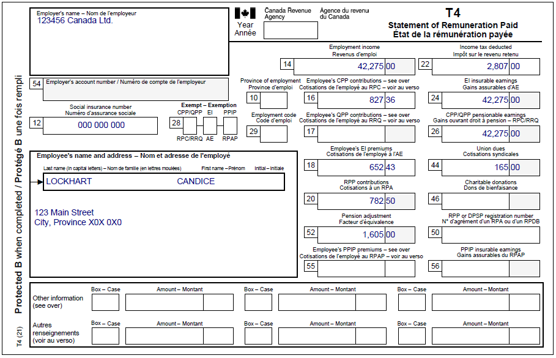
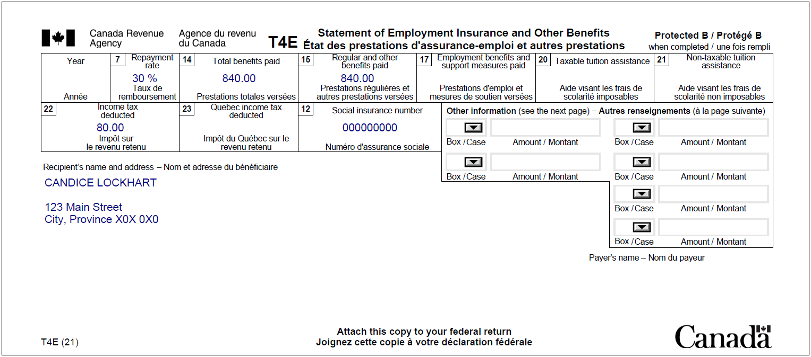
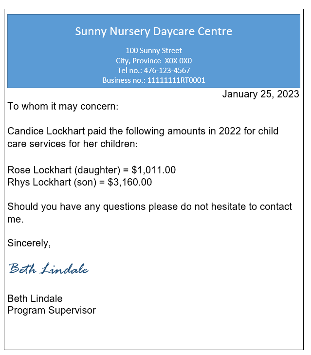

Claiming child care expenses
Pre-test question
Sorry, that's incorrect
Child care expenses are entered in the profile of the child for whom the expenses were paid.
That's correct
Child care expenses are entered in the profile of the child for whom the expenses were paid.
Instructions
- Open the tax software
- Review the Background information and Required slips (tax slips, receipts, etc.)
- Provide all required information for the appropriate sections of the tax software
- Once completed, compare your results with the solution provided
- Afterwards, refer to the Takeaway points
Background information
Situation
Candice is a single parent with two children (Rose and Rhys). Both children attended daycare and Candice would like to claim child care expenses.
Identification information
| Name | Tim Ward |
|---|---|
| Social insurance number (SIN) | 000 000 000 |
| Address | 123 Main Street City, Province X0X 0X0 |
| Date of birth | May 15, 1986 |
| Marital status | Divorced |
| Number of children (2) | Daughter: Rose Lockhart DOB: March 30, 2016 Son: Rhys Lockhart DOB: June 4, 2018 |
Required slips
T4 – Statement of Remuneration Paid
Text version
T4 – Statement of Remuneration Paid
Protected B
Employer’s name: 123456 Canada Ltd.
Employee’s name and address:
Last name: Lockhart
First name: Candice
123 Main Street
City, Province X0X 0X0
Box 12: Social insurance number: 000 000 000
Box 14: Employment income – line 10100: 42,275.00
Box 16: Employee’s CPP contributions – line 30800: 827.36
Box 18: Employee’s EI premiums – line 31200: 652.43
Box 20: RPP contributions – line 20700: 782.50
Box 52: Pension adjustment – line 20600: 1,605.00
Box 22: Income tax deducted – line 43700: 2,807.00
Box 24: EI insurable earnings: 42,275.00
Box 26: CPP/QPP pensionable earnings: 42,275.00
Box 44: Union dues – line 21200: 165.00
T4E– Statement of Employment Insurance and Other Benefits
Text version of the T4E
T4E – Statement of Employment Insurance and Other Benefits
Protected B
Recipient’s name and address:
Candice Lockhart
123 Main Street
City, Province X0X 0X0
Box 7: Repayment rate: 30%
Box 14: Total benefits paid: 840.00
Box 15: Regular and other benefits paid: 840.00
Box 22: Income tax deducted: 80.00
Box 12: Social insurance number: 000 000 000
Sunny Nursery Day Care Centre receipt
Text version of the day care receipt
Sunny Nursery Daycare Centre
100 Sunny Street
City, Province X0X 0X0
Tel no: 476-123-4567
Business no.: 11111111RT0001
To whom it may concern:
Candice Lockhart paid the following amounts in 2022 for child care services provided to her children:
Rose Lockhart (daughter)= $1,011.00
Rhys Lockhart (son)= $3,160.00
Should you have any questions please do not hesitate to contact me.
Sincerely,
Beth Lindale
Program Supervisor
Review your results
Solutions will be available in February 2023 as printable PDF.
Takeaway points
Steps to follow
- Review their background information and required slips
- Click add dependant next to Family Head (Candice) tab to add each dependant
- Complete the Dependant Identification section for each child
- Click Child care in the left-side menu of each dependant’s profile, then select the type of child care expenses from the drop-down menu to enter the amount paid for that child
The amount paid per child must be entered in each child’s individual profile when claiming child care expenses in the tax software.
In this case, the amount of $1,011 is entered under Rose’s profile and $3,160 is entered under Rhys’ profile. UFile automatically adds up the total amount of eligible child care expenses and enters it on line 21400 of Candice’s tax return.
For more information refer to UFile instructions.